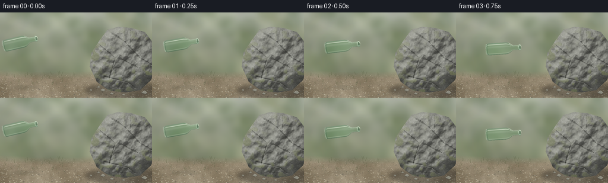
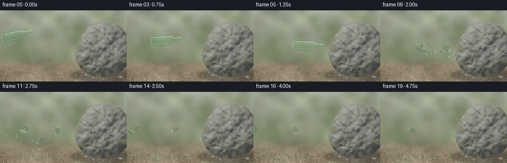
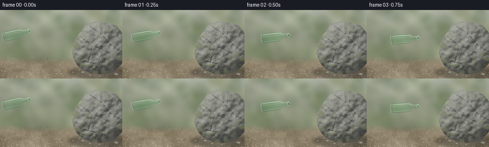
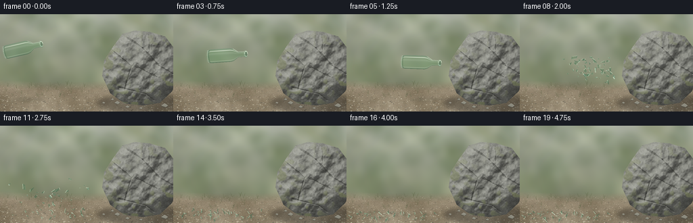
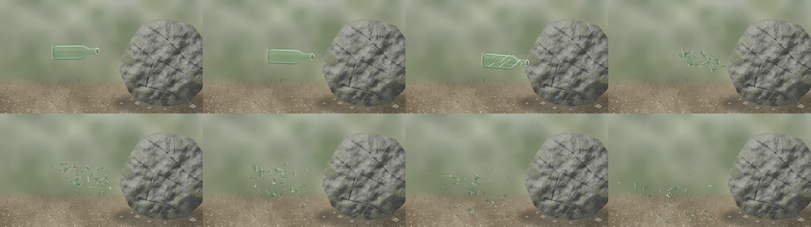

CODING AGENTS AS PIXEL WORLD MODELS
traex/GPT-6.1-Sol · phygen_133
点击播放 · 原生 RGB 像素
逐轮保存的候选
回放视频、检查图与代码变化。
每份候选均可单独播放。实际图片检查记录在下方工具轨迹中。
候选 01播放与检查图
点击播放 · 原生 RGB 像素


展开代码变化
--- 上一保存版本
+++ 本次保存版本
@@ -0,0 +1,299 @@
+from pathlib import Path
+import math
+import numpy as np
+from PIL import Image, ImageDraw, ImageFilter
+import artifact_io
+
+ROOT=Path(__file__).resolve().parent
+W,H,S=256,144,3
+WW,HH=W*S,H*S
+rng=np.random.default_rng(133)
+Y,X=np.mgrid[:HH,:WW].astype(float)/S
+
+def noise(grid, seed):
+ rr=np.random.default_rng(seed)
+ im=Image.fromarray(np.uint8(rr.random((grid[1],grid[0]))*255))
+ return np.asarray(im.resize((WW,HH),Image.Resampling.BICUBIC),float)/255
+
+n0=noise((7,5),3);n1=noise((20,13),14);n2=noise((46,28),22);n3=noise((117,65),5)
+n4=noise((370,215),15);n5=rng.random((HH,WW))
+
+def base_scene():
+ # A shallow-focus, sunlit scrub landscape beyond the collision plane.
+ a=np.zeros((HH,WW,3),float)
+ sky=np.clip((Y-4)/112,0,1)[...,None]
+ a[:]=np.array([181,187,171])*(1-sky)+np.array([119,126,100])*sky
+ broad=(n0-.5)*22+(n1-.5)*12
+ a+=broad[...,None]*np.array([.85,1,.7])
+ im=Image.fromarray(np.uint8(np.clip(a,0,255)))
+ d=ImageDraw.Draw(im,'RGBA')
+ rr=np.random.default_rng(45)
+ for j in range(130):
+ xx=rr.uniform(-25,280); yy=rr.uniform(-30,105); r=rr.uniform(4,21)
+ c=rr.choice([[79,99,63],[99,113,73],[145,151,119],[187,187,155],[87,105,77]])
+ d.ellipse(((xx-r)*S,(yy-r)*S,(xx+r)*S,(yy+r)*S),fill=(*map(int,c),int(rr.uniform(20,85))))
+ im=im.filter(ImageFilter.GaussianBlur(5.0*S))
+ a=np.array(im,float)
+ horizon=100+4*np.sin(X/60)
+ blend=np.clip((Y-horizon+4)/13,0,1)
+ ground=np.zeros_like(a)
+ ground[:]=[147,134,111]
+ ground+=(n0-.5)[...,None]*30+(n1-.5)[...,None]*17+(n2-.5)[...,None]*10
+ ground+=(n4-.5)[...,None]*12+(n5-.5)[...,None]*10
+ ground+=((Y-115)*.24)[...,None]
+ a=a*(1-blend[...,None])+ground*blend[...,None]
+ im=Image.fromarray(np.uint8(np.clip(a,0,255)))
+ d=ImageDraw.Draw(im,'RGBA')
+ rr=np.random.default_rng(73)
+ for j in range(1250):
+ xx=rr.uniform(-2,258); yy=rr.uniform(104,145)
+ rr0=rr.uniform(.12,1.3)*(yy-96)/48
+ c=rr.choice([[94,89,75],[182,174,151],[129,123,107],[199,191,167]])
+ d.ellipse(((xx-rr0)*S,(yy-rr0*.55)*S,(xx+rr0)*S,(yy+rr0*.55)*S),fill=(*map(int,c),int(rr.uniform(90,220))))
+ if rr0>.55:
+ d.line([(xx-rr0*.5)*S,(yy-rr0*.4)*S,(xx+rr0*.7)*S,(yy-rr0*.25)*S],fill=(208,200,177,140),width=1)
+ # Isolated tufts off the plane of focus.
+ for j in range(28):
+ xx=rr.uniform(0,127); yy=rr.uniform(104,127)
+ for k in range(3):
+ d.line([(xx*S,yy*S),((xx+rr.uniform(-3,3))*S,(yy-rr.uniform(2,7))*S)],fill=(91,98,67,125),width=1)
+ # Ground contact shadow of the substantial boulder.
+ sh=Image.new('RGBA',(WW,HH)); sd=ImageDraw.Draw(sh)
+ sd.ellipse((143*S,119*S,280*S,145*S),fill=(33,31,27,98))
+ sh=sh.filter(ImageFilter.GaussianBlur(3.2*S))
+ im=Image.alpha_composite(im.convert('RGBA'),sh).convert('RGB')
+
+ # Front-facing granite geometry represented by a displaced height surface.
+ outline=[(163,117),(151,91),(154,68),(167,48),(181,29),(199,24),(221,26),(244,33),(259,53),(266,86),(254,114),(236,131),(211,135),(184,132)]
+ mask=Image.new('L',(WW,HH)); md=ImageDraw.Draw(mask)
+ md.polygon([(int(x*S),int(y*S)) for x,y in outline],fill=255)
+ m=np.asarray(mask)>0
+ ex=(X-212)/65;ey=(Y-80)/57
+ rad=ex*ex+ey*ey
+ depth=36*np.sqrt(np.maximum(.018,1-rad))
+ # Broad ledges, asymmetric weathering, then smaller mineral-scale relief.
+ depth+=7*(n0-.5)+7*(n1-.5)+3*(n2-.5)+.65*(n3-.5)
+ # Linear, discontinuous clefts cut the surface rather than decorating it.
+ clefts=np.zeros((HH,WW)); dark=np.zeros((HH,WW))
+ for x0,y0,x1,y1,ww in [(163,51,194,77,1.0),(194,77,184,113,.9),(185,32,211,50,.7),(211,50,235,76,.8),(235,76,255,88,.7),(176,108,216,118,.8),(220,30,221,54,.55),(201,77,232,93,.55),(216,118,232,131,.65)]:
+ dx=x1-x0;dy=y1-y0
+ u=np.clip(((X-x0)*dx+(Y-y0)*dy)/(dx*dx+dy*dy),0,1)
+ px=x0+u*dx;py=y0+u*dy
+ dist=np.sqrt((X-px)**2+(Y-py)**2)
+ wav=(n2-.5)*1.8
+ crack=np.exp(-((dist+wav)/(ww*.8))**2)
+ clefts+=crack*1.55
+ dark+=crack*16
+ depth-=clefts
+ zy,zx=np.gradient(depth,1/S,1/S)
+ norm=np.sqrt(zx*zx+zy*zy+1)
+ light=np.maximum(0,(-zx*(-.54)-zy*(-.7)+.65)/norm)
+ rock=np.zeros((HH,WW,3)); rock[:]=[131,132,125]
+ shade=.57+.62*light
+ rock*=shade[...,None]
+ rock+=(n1-.5)[...,None]*16+(n2-.5)[...,None]*15+(n3-.5)[...,None]*10
+ rock+=(n4-.5)[...,None]*15+(n5-.5)[...,None]*14
+ rock-=dark[...,None]
+ # Quartz and darker mica specks, very small at final resolution.
+ fleck=np.clip((n5-.90)*110,0,10)-np.clip((.08-n5)*115,0,10)
+ rock+=fleck[...,None]
+ # A few subdued lichen stains on the upper/recessed facets.
+ lichen=np.clip((n2-.66)*4,0,.55)*np.clip((n0-.3)*2,0,1)
+ rock=rock*(1-lichen[...,None])+np.array([116,123,82])*lichen[...,None]
+ a=np.asarray(im,float)
+ a[m]=rock[m]
+ im=Image.fromarray(np.uint8(np.clip(a,0,255)))
+ # Pebbles at the boulder's foot convey scale and contact with the soil.
+ d=ImageDraw.Draw(im,'RGBA')
+ for xx,yy,r in [(173,131,4),(188,137,3),(243,135,5),(153,131,2),(208,139,2.5),(166,126,2.2)]:
+ d.ellipse(((xx-r)*S,(yy-r*.4)*S,(xx+r)*S,(yy+r*.65)*S),fill=(92,88,76,230))
+ d.polygon([((xx-r)*S,yy*S),(xx*S,(yy-r*.65)*S),((xx+r)*S,(yy-r*.05)*S),((xx+r*.4)*S,(yy+r*.5)*S)],fill=(144,143,130,255))
+ d.line([((xx-r*.7)*S,(yy-r*.08)*S),(xx*S,(yy-r*.57)*S),((xx+r*.7)*S,(yy-r*.05)*S)],fill=(176,173,158,220),width=1)
+ return np.array(im),outline
+
+BASE,OUTLINE=base_scene()
+
+def transform_points(points,cx,cy,theta):
+ c,s=math.cos(theta),math.sin(theta)
+ return [(S*(cx+c*u-s*v),S*(cy+s*u+c*v)) for u,v in points]
+
+def transparent_bottle(bg,cx,cy,theta,cracked=False):
+ c,s=math.cos(theta),math.sin(theta)
+ u=(X-cx)*c+(Y-cy)*s
+ v=-(X-cx)*s+(Y-cy)*c
+ radii=np.interp(u,[-27,-26,-24,-21,8,12,16,19,29,30,32,33],[0,6.4,9.3,10,10,9,6.2,3.9,3.9,4.7,4.7,0])
+ inside=(np.abs(v)<radii)&(u>-27)&(u<33)
+ ratio=v/np.maximum(radii,.05)
+ nz=np.sqrt(np.clip(1-ratio*ratio,0,1))
+ fresnel=.045+.60*(1-nz)**3
+ # Refraction of the actual background: a hollow, empty, thin-walled bottle.
+ offset=ratio*(1-nz)*3.2
+ sx=np.clip(((X-s*offset+.5*np.sin(u*.12))*S).astype(int),0,WW-1)
+ sy=np.clip(((Y+c*offset)*S).astype(int),0,HH-1)
+ refr=bg[sy,sx].astype(float)*[.89,.98,.91]+[3,6,4]
+ reflected=np.zeros_like(refr)
+ env=np.clip((.25-ratio)*.65,0,1)[...,None]
+ reflected[:]=np.array([211,222,205])*env+np.array([55,78,65])*(1-env)
+ glass=refr*(1-fresnel[...,None])+reflected*fresnel[...,None]
+ # Elongated specular strips and subtle curved highlights on the shoulders.
+ h1=np.exp(-((ratio+.72)/.045)**2)*(.62+.27*np.cos(u*.07))
+ h2=np.exp(-((ratio-.80)/.07)**2)*.23
+ h3=np.exp(-((ratio+.32)/.16)**2)*.10
+ highlights=np.clip(h1+h2+h3,0,.85)
+ glass=glass*(1-highlights[...,None])+np.array([245,252,237])*highlights[...,None]
+ edge=np.clip((np.abs(ratio)-.88)/.12,0,1)*.4
+ glass=glass*(1-edge[...,None])+np.array([62,99,82])*edge[...,None]
+ arr=bg.copy();arr[inside]=np.uint8(np.clip(glass[inside],0,255))
+ im=Image.fromarray(arr).convert('RGBA')
+ layer=Image.new('RGBA',(WW,HH));d=ImageDraw.Draw(layer)
+ # The rim is open, with a visible dark aperture and a thin polished lip.
+ for uu,rx,ry,col in [(30.8,2.1,4.4,(175,206,180,195)),(31.1,1.4,3.05,(55,81,62,105))]:
+ pts=[(uu+rx*math.cos(t),ry*math.sin(t)) for t in np.linspace(0,2*math.pi,55)]
+ d.polygon(transform_points(pts,cx,cy,theta),fill=col)
+ rim=[(31+2*math.cos(t),4.1*math.sin(t)) for t in np.linspace(math.pi,2*math.pi,30)]
+ d.line(transform_points(rim,cx,cy,theta),fill=(233,247,221,225),width=2)
+ bottom=[(-24.4+1.7*math.cos(t),9.0*math.sin(t)) for t in np.linspace(math.pi/2,math.pi*1.5,32)]
+ d.line(transform_points(bottom,cx,cy,theta),fill=(215,232,211,170),width=2)
+ bottom2=[(-22.8+1.4*math.cos(t),8.3*math.sin(t)) for t in np.linspace(math.pi/2,math.pi*1.5,32)]
+ d.line(transform_points(bottom2,cx,cy,theta),fill=(56,91,71,150),width=2)
+ # Small edge glints on the thin shoulder and neck.
+ d.line(transform_points([(12,-8.8),(16,-6.3),(19,-4),(28,-3.6)],cx,cy,theta),fill=(235,244,223,185),width=2)
+ if cracked:
+ cracks=[[(31,0),(25,1),(22,-3),(19,-1),(14,-7),(7,-8),(2,-3),(-8,-5),(-17,-2),(-24,-5)],[(22,-3),(17,3),(9,5),(3,2),(-3,8)],[(17,3),(13,7),(9,9)],[(2,-3),(-2,2),(-11,4),(-17,9)],[(7,-8),(10,-3),(5,1)],[(25,1),(23,4)], [(-8,-5),(-11,-9)]]
+ for pts in cracks:
+ p=transform_points(pts,cx,cy,theta)
+ d.line(p,fill=(244,250,233,220),width=2)
+ d.line([(xx+1,yy+1) for xx,yy in p],fill=(38,68,54,160),width=1)
+ return np.array(Image.alpha_composite(im,layer).convert('RGB'))
+
+# Discrete ballistic trajectories for individually tumbling, thin glass fragments.
+parts=[]
+rr=np.random.default_rng(332)
+for j in range(63):
+ u=rr.uniform(-24,19) if j>5 else rr.uniform(18,31)
+ rv=np.interp(u,[-24,8,19,31],[9,10,3.9,4])
+ v=rr.uniform(-rv,rv)
+ size=rr.uniform(2.5,6.5) if j<20 else rr.uniform(.65,3.5)
+ if j<6: size=rr.uniform(2,4)
+ ang=rr.uniform(0,2*np.pi)
+ verts=[]
+ for k in range(rr.integers(3,6)):
+ a=ang+k*2*np.pi/4
+ rad0=rr.uniform(.6,1.05)*size
+ verts.append((math.cos(a)*rad0, math.sin(a)*rad0*rr.uniform(.45,.8)))
+ # Fragments reverse horizontally on collision; they do not pass through stone.
+ velx=rr.uniform(-62,-12)
+ vely=rr.uniform(-36,18)
+ if j>=30: velx=rr.uniform(-75,5);vely=rr.uniform(-48,25)
+ p0=np.array([122.5+u*math.cos(.09)-v*math.sin(.09),77.5+u*math.sin(.09)+v*math.cos(.09)])
+ parts.append(dict(p0=p0,vel=np.array([velx,vely]),verts=verts,size=size,angle=rr.uniform(0,6.28),spin=rr.uniform(-8,8),phase=rr.uniform(0,6.28),ground=rr.uniform(127,140),tint=rr.uniform(.85,1.2)))
+
+DT=1/160
+for p in parts:
+ pos=p['p0'].copy(); vel=p['vel'].copy();a=p['angle'];spin=p['spin'];history=[];hits=0
+ for step in range(650):
+ history.append((pos.copy(),a,vel.copy(),hits))
+ vel[1]+=76*DT
+ pos+=vel*DT
+ # Rock's near silhouette, with inelastic rebound.
+ if 36<pos[1]<128:
+ wall=153 + max(0,68-pos[1])*.55+max(0,pos[1]-95)*.30
+ if pos[0]>wall-p['size']*.4 and vel[0]>0:
+ pos[0]=wall-p['size']*.4;vel[0]*=-.5
+ if pos[1]>=p['ground']:
+ pos[1]=p['ground']; hits+=1
+ if abs(vel[1])>8 and hits<4:
+ vel[1]=-vel[1]*.29;vel[0]*=.61;spin*=.55
+ else:
+ vel[1]=0;vel[0]*=.9;spin*=.83
+ if abs(vel[0])<.3:vel[0]=0
+ a+=spin*DT
+ p['history']=history
+
+def fragment_state(p,t):
+ idx=max(0,min(len(p['history'])-1,int(t/DT)))
+ return p['history'][idx]
+
+def airborne_shadow(im,t):
+ layer=Image.new('RGBA',(WW,HH));d=ImageDraw.Draw(layer)
+ if t<=1.5:
+ cx=31+61*t
+ d.ellipse(((cx-13)*S,123*S,(cx+34)*S,130*S),fill=(31,43,30,22))
+ else:
+ tau=(t-1.5)
+ for p in parts:
+ pos,a,vel,hits=fragment_state(p,tau)
+ r=p['size']
+ alpha=int(36*np.exp(-max(0,p['ground']-pos[1])/24))
+ d.ellipse(((pos[0]-r*.7+3)*S,(p['ground']-1)*S,(pos[0]+r*.7+3)*S,(p['ground']+1)*S),fill=(30,39,27,alpha))
+ layer=layer.filter(ImageFilter.GaussianBlur(1.1*S))
+ return Image.alpha_composite(im.convert('RGBA'),layer).convert('RGB')
+
+def draw_fragments(im,t):
+ tau=t-1.5
+ # Very modest grit at the contact point, not smoke or an implausible explosion.
+ if tau<1.1:
+ puff=Image.new('RGBA',(WW,HH));pd=ImageDraw.Draw(puff)
+ pr=np.random.default_rng(222)
+ for i in range(15):
+ x=153-pr.uniform(5,26)*tau;y=80+pr.uniform(-12,11)*tau+12*tau*tau
+ r=pr.uniform(1.3,3)*(1+tau*1.5)
+ alpha=int(24*max(0,1-tau/1.1))
+ pd.ellipse(((x-r)*S,(y-r)*S,(x+r)*S,(y+r)*S),fill=(161,151,125,alpha))
+ puff=puff.filter(ImageFilter.GaussianBlur(1.8*S))
+ im=Image.alpha_composite(im.convert('RGBA'),puff).convert('RGB')
+ arr=np.array(im)
+ # Each shard refracts the background and reflects light with a rotating surface.
+ for p in sorted(parts,key=lambda p:p['size']):
+ pos,a,vel,hits=fragment_state(p,tau)
+ tilt=.32+.68*abs(math.cos(tau*3.8+p['phase']))
+ if hits:tilt=.22+.08*abs(math.cos(a))
+ ca,sa=math.cos(a),math.sin(a)
+ coords=[]
+ for u,v in p['verts']:
+ uu=u;vv=v*tilt
+ coords.append(((pos[0]+ca*uu-sa*vv)*S,(pos[1]+sa*uu+ca*vv)*S))
+ mask=Image.new('L',(WW,HH)); md=ImageDraw.Draw(mask);md.polygon(coords,fill=255)
+ m=np.array(mask)>0
+ glint=max(0,math.cos(a*1.8+p['phase']))**14
+ base=arr[m].astype(float)
+ reflection=np.array([166,200,180])*(.5+.4*glint)
+ f=.17+.38*glint
+ arr[m]=np.uint8(np.clip(base*np.array([.91,.99,.92])*(1-f)+reflection*f,0,255))
+ layer=Image.new('RGBA',(WW,HH));d=ImageDraw.Draw(layer)
+ d.line(coords+[coords[0]],fill=(66,108,84,int(115+35*tilt)),width=1 if p['size']<2 else 2)
+ # Thin fracture edges flash white rather than looking like opaque confetti.
+ d.line(coords[:2],fill=(224,244,216,int(155+90*glint)),width=2 if p['size']>2.3 else 1)
+ if len(coords)>3:
+ d.line(coords[2:4],fill=(154,202,171,160),width=1)
+ if glint>.35 and p['size']>2.0:
+ xx,yy=coords[0]; r=1.1*S
+ d.line([(xx-r,yy),(xx+r,yy)],fill=(252,255,236,int(190*glint)),width=1)
+ d.line([(xx,yy-r*.8),(xx,yy+r*.8)],fill=(252,255,236,int(180*glint)),width=1)
+ arr=np.array(Image.alpha_composite(Image.fromarray(arr).convert('RGBA'),layer).convert('RGB'))
+ return arr
+
+def render(t):
+ im=airborne_shadow(Image.fromarray(BASE),t)
+ if t<=1.50001:
+ cx=31+61*t;cy=51+8.6*t+6*t*t
+ theta=math.radians(-13+12*t)
+ # Very short shutter: trace the forceful throw without obscuring the glass.
+ bg=np.array(im)
+ out=transparent_bottle(bg,cx,cy,theta,t>=1.499)
+ if t<1.49:
+ prev=transparent_bottle(bg,cx-1.5,cy-.35,theta-.006)
+ out=np.uint8(out.astype(float)*.83+prev.astype(float)*.17)
+ else:
+ out=draw_fragments(im,t)
+ im=Image.fromarray(out).resize((W,H),Image.Resampling.LANCZOS)
+ # Mild lens vignette and restrained warm grading shared by every frame.
+ ar=np.array(im,float)
+ yy,xx=np.mgrid[:H,:W]
+ vig=1-.07*((xx-W*.48)/(W*.8))**2-.045*((yy-H*.5)/(H*.8))**2
+ ar*=vig[...,None]
+ return np.uint8(np.clip(ar,0,255))
+
+frames=np.stack([render(i/4) for i in range(20)])
+artifact_io.save(frames,ROOT)
+print('Saved',frames.shape,'RGB frames to',ROOT)
候选 02播放与检查图
点击播放 · 原生 RGB 像素


展开代码变化
--- 上一保存版本
+++ 本次保存版本
@@ -64,7 +64,7 @@
im=Image.alpha_composite(im.convert('RGBA'),sh).convert('RGB')
# Front-facing granite geometry represented by a displaced height surface.
- outline=[(163,117),(151,91),(154,68),(167,48),(181,29),(199,24),(221,26),(244,33),(259,53),(266,86),(254,114),(236,131),(211,135),(184,132)]
+ outline=[(163,117),(157,109),(151,91),(153,79),(154,68),(160,57),(167,48),(171,44),(181,29),(190,27),(199,24),(214,26),(221,26),(236,30),(244,33),(254,46),(259,53),(263,71),(266,86),(259,103),(254,114),(243,125),(236,131),(225,133),(211,135),(193,133),(184,132),(172,125)]
mask=Image.new('L',(WW,HH)); md=ImageDraw.Draw(mask)
md.polygon([(int(x*S),int(y*S)) for x,y in outline],fill=255)
m=np.asarray(mask)>0
@@ -72,7 +72,7 @@
rad=ex*ex+ey*ey
depth=36*np.sqrt(np.maximum(.018,1-rad))
# Broad ledges, asymmetric weathering, then smaller mineral-scale relief.
- depth+=7*(n0-.5)+7*(n1-.5)+3*(n2-.5)+.65*(n3-.5)
+ depth+=7*(n0-.5)+5*(n1-.5)+2.2*(n2-.5)+.45*(n3-.5)
# Linear, discontinuous clefts cut the surface rather than decorating it.
clefts=np.zeros((HH,WW)); dark=np.zeros((HH,WW))
for x0,y0,x1,y1,ww in [(163,51,194,77,1.0),(194,77,184,113,.9),(185,32,211,50,.7),(211,50,235,76,.8),(235,76,255,88,.7),(176,108,216,118,.8),(220,30,221,54,.55),(201,77,232,93,.55),(216,118,232,131,.65)]:
@@ -82,8 +82,8 @@
dist=np.sqrt((X-px)**2+(Y-py)**2)
wav=(n2-.5)*1.8
crack=np.exp(-((dist+wav)/(ww*.8))**2)
- clefts+=crack*1.55
- dark+=crack*16
+ clefts+=crack*1.10
+ dark+=crack*13
depth-=clefts
zy,zx=np.gradient(depth,1/S,1/S)
norm=np.sqrt(zx*zx+zy*zy+1)
@@ -185,8 +185,23 @@
velx=rr.uniform(-62,-12)
vely=rr.uniform(-36,18)
if j>=30: velx=rr.uniform(-75,5);vely=rr.uniform(-48,25)
+ kind='chip'
+ if j==0:
+ # The bottle's bottom survives as a visibly curved, hollow glass crescent.
+ u,v=-23,0; size=9;kind='base'
+ verts=[(-4,-7),(-2,-9),(2,-8),(4,-5),(4,5),(2,8),(-2,9),(-4,7),(-2,5),(0,6),(1,4),(1,-4),(0,-6),(-2,-5)]
+ velx,vely=-39,-19
+ elif j==1:
+ # A jagged piece of the neck retains the small open mouth.
+ u,v=25,0;size=8;kind='neck'
+ verts=[(-8,-2.6),(-5,-4),(6,-4),(7,-2),(7,2),(6,4),(-5,4),(-7,2),(-4,1),(-6,0)]
+ velx,vely=-25,-30
+ elif j==2:
+ u,v=-10,5;size=8;kind='wall'
+ verts=[(-8,-3),(-3,-5),(7,-3),(9,0),(1,5),(-6,2)]
+ velx,vely=-52,-9
p0=np.array([122.5+u*math.cos(.09)-v*math.sin(.09),77.5+u*math.sin(.09)+v*math.cos(.09)])
- parts.append(dict(p0=p0,vel=np.array([velx,vely]),verts=verts,size=size,angle=rr.uniform(0,6.28),spin=rr.uniform(-8,8),phase=rr.uniform(0,6.28),ground=rr.uniform(127,140),tint=rr.uniform(.85,1.2)))
+ parts.append(dict(kind=kind,p0=p0,vel=np.array([velx,vely]),verts=verts,size=size,angle=rr.uniform(0,6.28),spin=rr.uniform(-8,8),phase=rr.uniform(0,6.28),ground=rr.uniform(127,140),tint=rr.uniform(.85,1.2)))
DT=1/160
for p in parts:
@@ -247,7 +262,8 @@
for p in sorted(parts,key=lambda p:p['size']):
pos,a,vel,hits=fragment_state(p,tau)
tilt=.32+.68*abs(math.cos(tau*3.8+p['phase']))
- if hits:tilt=.22+.08*abs(math.cos(a))
+ if hits:tilt=.28+.08*abs(math.cos(a))
+ if p['kind']=='neck' and not hits: tilt=.7+.3*tilt
ca,sa=math.cos(a),math.sin(a)
coords=[]
for u,v in p['verts']:
@@ -257,13 +273,18 @@
m=np.array(mask)>0
glint=max(0,math.cos(a*1.8+p['phase']))**14
base=arr[m].astype(float)
- reflection=np.array([166,200,180])*(.5+.4*glint)
+ reflection=np.array([184,204,187])*(.5+.4*glint)
f=.17+.38*glint
arr[m]=np.uint8(np.clip(base*np.array([.91,.99,.92])*(1-f)+reflection*f,0,255))
layer=Image.new('RGBA',(WW,HH));d=ImageDraw.Draw(layer)
- d.line(coords+[coords[0]],fill=(66,108,84,int(115+35*tilt)),width=1 if p['size']<2 else 2)
+ d.line(coords+[coords[0]],fill=(82,113,91,int(115+35*tilt)),width=1 if p['size']<2 else 2)
# Thin fracture edges flash white rather than looking like opaque confetti.
d.line(coords[:2],fill=(224,244,216,int(155+90*glint)),width=2 if p['size']>2.3 else 1)
+ if p['kind']=='neck':
+ rim=transform_points([(6+1.1*math.cos(q),3.6*tilt*math.sin(q)) for q in np.linspace(0,2*math.pi,24)],pos[0],pos[1],a)
+ d.line(rim,fill=(218,235,212,190),width=2)
+ if p['kind']=='wall':
+ d.line([coords[0],coords[1],coords[2]],fill=(240,248,229,195),width=2)
if len(coords)>3:
d.line(coords[2:4],fill=(154,202,171,160),width=1)
if glint>.35 and p['size']>2.0:
可观测工具轨迹
实际执行的命令与返回图片。
命令 1exit 0
/bin/bash -lc 'ls -la && cat prompt.txt && cat GENERATION_RULES.md && cat task_spec.json'
命令 2exit 0
/bin/bash -lc 'cat artifact_io.py'
命令 3exit 0
/bin/bash -lc "python - <<'PY'
import PIL,numpy
print('PIL',PIL.__version__)
PY"命令 4exit 0
/bin/bash -lc "python - <<'PY' import scipy print(scipy.__version__) PY"
命令 5exit 0
/bin/bash -lc "cat > generate.py <<'PY'
from pathlib import Path
import math
import numpy as np
from PIL import Image, ImageDraw, ImageFilter
import artifact_io
ROOT=Path(__file__).resolve().parent
W,H,S=256,144,3
WW,HH=W*S,H*S
rng=np.random.default_rng(133)
Y,X=np.mgrid[:HH,:WW].astype(float)/S
def noise(grid, seed):
rr=np.random.default_rng(seed)
im=Image.fromarray(np.uint8(rr.random((grid[1],grid[0]))*255))
return np.asarray(im.resize((WW,HH),Image.Resampling.BICUBIC),float)/255
n0=noise((7,5),3);n1=noise((20,13),14);n2=noise((46,28),22);n3=noise((117,65),5)
n4=noise((370,215),15);n5=rng.random((HH,WW))
def base_scene():
# A shallow-focus, sunlit scrub landscape beyond the collision plane.
a=np.zeros((HH,WW,3),float)
sky=np.clip((Y-4)/112,0,1)[...,None]
a[:]=np.array([181,187,171])*(1-sky)+np.array([119,126,100])*sky
broad=(n0-.5)*22+(n1-.5)*12
a+=broad[...,None]*np.array([.85,1,.7])
im=Image.fromarray(np.uint8(np.clip(a,0,255)))
d=ImageDraw.Draw(im,'RGBA')
rr=np.random.default_rng(45)
for j in range(130):
xx=rr.uniform(-25,280); yy=rr.uniform(-30,105); r=rr.uniform(4,21)
c=rr.choice([[79,99,63],[99,113,73],[145,151,119],[187,187,155],[87,105,77]])
d.ellipse(((xx-r)*S,(yy-r)*S,(xx+r)*S,(yy+r)*S),fill=(*map(int,c),int(rr.uniform(20,85))))
im=im.filter(ImageFilter.GaussianBlur(5.0*S))
a=np.array(im,float)
horizon=100+4*np.sin(X/60)
blend=np.clip((Y-horizon+4)/13,0,1)
ground=np.zeros_like(a)
ground[:]=[147,134,111]
ground+=(n0-.5)[...,None]*30+(n1-.5)[...,None]*17+(n2-.5)[...,None]*10
ground+=(n4-.5)[...,None]*12+(n5-.5)[...,None]*10
ground+=((Y-115)*.24)[...,None]
a=a*(1-blend[...,None])+ground*blend[...,None]
im=Image.fromarray(np.uint8(np.clip(a,0,255)))
d=ImageDraw.Draw(im,'RGBA')
rr=np.random.default_rng(73)
for j in range(1250):
xx=rr.uniform(-2,258); yy=rr.uniform(104,145)
rr0=rr.uniform(.12,1.3)*(yy-96)/48
c=rr.choice([[94,89,75],[182,174,151],[129,123,107],[199,191,167]])
d.ellipse(((xx-rr0)*S,(yy-rr0*.55)*S,(xx+rr0)*S,(yy+rr0*.55)*S),fill=(*map(int,c),int(rr.uniform(90,220))))
if rr0>.55:
d.line([(xx-rr0*.5)*S,(yy-rr0*.4)*S,(xx+rr0*.7)*S,(yy-rr0*.25)*S],fill=(208,200,177,140),width=1)
# Isolated tufts off the plane of focus.
for j in range(28):
xx=rr.uniform(0,127); yy=rr.uniform(104,127)
for k in range(3):
d.line([(xx*S,yy*S),((xx+rr.uniform(-3,3))*S,(yy-rr.uniform(2,7))*S)],fill=(91,98,67,125),width=1)
# Ground contact shadow of the substantial boulder.
sh=Image.new('RGBA',(WW,HH)); sd=ImageDraw.Draw(sh)
sd.ellipse((143*S,119*S,280*S,145*S),fill=(33,31,27,98))
sh=sh.filter(ImageFilter.GaussianBlur(3.2*S))
im=Image.alpha_composite(im.convert('RGBA'),sh).convert('RGB')
# Front-facing granite geometry represented by a displaced height surface.
outline=[(163,117),(151,91),(154,68),(167,48),(181,29),(199,24),(221,26),(244,33),(259,53),(266,86),(254,114),(236,131),(211,135),(184,132)]
mask=Image.new('L',(WW,HH)); md=ImageDraw.Draw(mask)
md.polygon([(int(x*S),int(y*S)) for x,y in outline],fill=255)
m=np.asarray(mask)>0
ex=(X-212)/65;ey=(Y-80)/57
rad=ex*ex+ey*ey
depth=36*np.sqrt(np.maximum(.018,1-rad))
# Broad ledges, asymmetric weathering, then smaller mineral-scale relief.
depth+=7*(n0-.5)+7*(n1-.5)+3*(n2-.5)+.65*(n3-.5)
# Linear, discontinuous clefts cut the surface rather than decorating it.
clefts=np.zeros((HH,WW)); dark=np.zeros((HH,WW))
for x0,y0,x1,y1,ww in [(163,51,194,77,1.0),(194,77,184,113,.9),(185,32,211,50,.7),(211,50,235,76,.8),(235,76,255,88,.7),(176,108,216,118,.8),(220,30,221,54,.55),(201,77,232,93,.55),(216,118,232,131,.65)]:
dx=x1-x0;dy=y1-y0
u=np.clip(((X-x0)*dx+(Y-y0)*dy)/(dx*dx+dy*dy),0,1)
px=x0+u*dx;py=y0+u*dy
dist=np.sqrt((X-px)**2+(Y-py)**2)
wav=(n2-.5)*1.8
crack=np.exp(-((dist+wav)/(ww*.8))**2)
clefts+=crack*1.55
dark+=crack*16
depth-=clefts
zy,zx=np.gradient(depth,1/S,1/S)
norm=np.sqrt(zx*zx+zy*zy+1)
light=np.maximum(0,(-zx*(-.54)-zy*(-.7)+.65)/norm)
rock=np.zeros((HH,WW,3)); rock[:]=[131,132,125]
shade=.57+.62*light
rock*=shade[...,None]
rock+=(n1-.5)[...,None]*16+(n2-.5)[...,None]*15+(n3-.5)[...,None]*10
rock+=(n4-.5)[...,None]*15+(n5-.5)[...,None]*14
rock-=dark[...,None]
# Quartz and darker mica specks, very small at final resolution.
fleck=np.clip((n5-.90)*110,0,10)-np.clip((.08-n5)*115,0,10)
rock+=fleck[...,None]
# A few subdued lichen stains on the upper/recessed facets.
lichen=np.clip((n2-.66)*4,0,.55)*np.clip((n0-.3)*2,0,1)
rock=rock*(1-lichen[...,None])+np.array([116,123,82])*lichen[...,None]
a=np.asarray(im,float)
a[m]=rock[m]
im=Image.fromarray(np.uint8(np.clip(a,0,255)))
# Pebbles at the boulder's foot convey scale and contact with the soil.
d=ImageDraw.Draw(im,'RGBA')
for xx,yy,r in [(173,131,4),(188,137,3),(243,135,5),(153,131,2),(208,139,2.5),(166,126,2.2)]:
d.ellipse(((xx-r)*S,(yy-r*.4)*S,(xx+r)*S,(yy+r*.65)*S),fill=(92,88,76,230))
d.polygon([((xx-r)*S,yy*S),(xx*S,(yy-r*.65)*S),((xx+r)*S,(yy-r*.05)*S),((xx+r*.4)*S,(yy+r*.5)*S)],fill=(144,143,130,255))
d.line([((xx-r*.7)*S,(yy-r*.08)*S),(xx*S,(yy-r*.57)*S),((xx+r*.7)*S,(yy-r*.05)*S)],fill=(176,173,158,220),width=1)
return np.array(im),outline
BASE,OUTLINE=base_scene()
def transform_points(points,cx,cy,theta):
c,s=math.cos(theta),math.sin(theta)
return [(S*(cx+c*u-s*v),S*(cy+s*u+c*v)) for u,v in points]
def transparent_bottle(bg,cx,cy,theta,cracked=False):
c,s=math.cos(theta),math.sin(theta)
u=(X-cx)*c+(Y-cy)*s
v=-(X-cx)*s+(Y-cy)*c
radii=np.interp(u,[-27,-26,-24,-21,8,12,16,19,29,30,32,33],[0,6.4,9.3,10,10,9,6.2,3.9,3.9,4.7,4.7,0])
inside=(np.abs(v)<radii)&(u>-27)&(u<33)
ratio=v/np.maximum(radii,.05)
nz=np.sqrt(np.clip(1-ratio*ratio,0,1))
fresnel=.045+.60*(1-nz)**3
# Refraction of the actual background: a hollow, empty, thin-walled bottle.
offset=ratio*(1-nz)*3.2
sx=np.clip(((X-s*offset+.5*np.sin(u*.12))*S).astype(int),0,WW-1)
sy=np.clip(((Y+c*offset)*S).astype(int),0,HH-1)
refr=bg[sy,sx].astype(float)*[.89,.98,.91]+[3,6,4]
reflected=np.zeros_like(refr)
env=np.clip((.25-ratio)*.65,0,1)[...,None]
reflected[:]=np.array([211,222,205])*env+np.array([55,78,65])*(1-env)
glass=refr*(1-fresnel[...,None])+reflected*fresnel[...,None]
# Elongated specular strips and subtle curved highlights on the shoulders.
h1=np.exp(-((ratio+.72)/.045)**2)*(.62+.27*np.cos(u*.07))
h2=np.exp(-((ratio-.80)/.07)**2)*.23
h3=np.exp(-((ratio+.32)/.16)**2)*.10
highlights=np.clip(h1+h2+h3,0,.85)
glass=glass*(1-highlights[...,None])+np.array([245,252,237])*highlights[...,None]
edge=np.clip((np.abs(ratio)-.88)/.12,0,1)*.4
glass=glass*(1-edge[...,None])+np.array([62,99,82])*edge[...,None]
arr=bg.copy();arr[inside]=np.uint8(np.clip(glass[inside],0,255))
im=Image.fromarray(arr).convert('RGBA')
layer=Image.new('RGBA',(WW,HH));d=ImageDraw.Draw(layer)
# The rim is open, with a visible dark aperture and a thin polished lip.
for uu,rx,ry,col in [(30.8,2.1,4.4,(175,206,180,195)),(31.1,1.4,3.05,(55,81,62,105))]:
pts=[(uu+rx*math.cos(t),ry*math.sin(t)) for t in np.linspace(0,2*math.pi,55)]
d.polygon(transform_points(pts,cx,cy,theta),fill=col)
rim=[(31+2*math.cos(t),4.1*math.sin(t)) for t in np.linspace(math.pi,2*math.pi,30)]
d.line(transform_points(rim,cx,cy,theta),fill=(233,247,221,225),width=2)
bottom=[(-24.4+1.7*math.cos(t),9.0*math.sin(t)) for t in np.linspace(math.pi/2,math.pi*1.5,32)]
d.line(transform_points(bottom,cx,cy,theta),fill=(215,232,211,170),width=2)
bottom2=[(-22.8+1.4*math.cos(t),8.3*math.sin(t)) for t in np.linspace(math.pi/2,math.pi*1.5,32)]
d.line(transform_points(bottom2,cx,cy,theta),fill=(56,91,71,150),width=2)
# Small edge glints on the thin shoulder and neck.
d.line(transform_points([(12,-8.8),(16,-6.3),(19,-4),(28,-3.6)],cx,cy,theta),fill=(235,244,223,185),width=2)
if cracked:
cracks=[[(31,0),(25,1),(22,-3),(19,-1),(14,-7),(7,-8),(2,-3),(-8,-5),(-17,-2),(-24,-5)],[(22,-3),(17,3),(9,5),(3,2),(-3,8)],[(17,3),(13,7),(9,9)],[(2,-3),(-2,2),(-11,4),(-17,9)],[(7,-8),(10,-3),(5,1)],[(25,1),(23,4)], [(-8,-5),(-11,-9)]]
for pts in cracks:
p=transform_points(pts,cx,cy,theta)
d.line(p,fill=(244,250,233,220),width=2)
d.line([(xx+1,yy+1) for xx,yy in p],fill=(38,68,54,160),width=1)
return np.array(Image.alpha_composite(im,layer).convert('RGB'))
# Discrete ballistic trajectories for individually tumbling, thin glass fragments.
parts=[]
rr=np.random.default_rng(332)
for j in range(63):
u=rr.uniform(-24,19) if j>5 else rr.uniform(18,31)
rv=np.interp(u,[-24,8,19,31],[9,10,3.9,4])
v=rr.uniform(-rv,rv)
size=rr.uniform(2.5,6.5) if j<20 else rr.uniform(.65,3.5)
if j<6: size=rr.uniform(2,4)
ang=rr.uniform(0,2*np.pi)
verts=[]
for k in range(rr.integers(3,6)):
a=ang+k*2*np.pi/4
rad0=rr.uniform(.6,1.05)*size
verts.append((math.cos(a)*rad0, math.sin(a)*rad0*rr.uniform(.45,.8)))
# Fragments reverse horizontally on collision; they do not pass through stone.
velx=rr.uniform(-62,-12)
vely=rr.uniform(-36,18)
if j>=30: velx=rr.uniform(-75,5);vely=rr.uniform(-48,25)
p0=np.array([122.5+u*math.cos(.09)-v*math.sin(.09),77.5+u*math.sin(.09)+v*math.cos(.09)])
parts.append(dict(p0=p0,vel=np.array([velx,vely]),verts=verts,size=size,angle=rr.uniform(0,6.28),spin=rr.uniform(-8,8),phase=rr.uniform(0,6.28),ground=rr.uniform(127,140),tint=rr.uniform(.85,1.2)))
DT=1/160
for p in parts:
pos=p['p0'].copy(); vel=p['vel'].copy();a=p['angle'];spin=p['spin'];history=[];hits=0
for step in range(650):
history.append((pos.copy(),a,vel.copy(),hits))
vel[1]+=76*DT
pos+=vel*DT
# Rock's near silhouette, with inelastic rebound.
if 36<pos[1]<128:
wall=153 + max(0,68-pos[1])*.55+max(0,pos[1]-95)*.30
if pos[0]>wall-p['size']*.4 and vel[0]>0:
pos[0]=wall-p['size']*.4;vel[0]*=-.5
if pos[1]>=p['ground']:
pos[1]=p['ground']; hits+=1
if abs(vel[1])>8 and hits<4:
vel[1]=-vel[1]*.29;vel[0]*=.61;spin*=.55
else:
vel[1]=0;vel[0]*=.9;spin*=.83
if abs(vel[0])<.3:vel[0]=0
a+=spin*DT
p['history']=history
def fragment_state(p,t):
idx=max(0,min(len(p['history'])-1,int(t/DT)))
return p['history'][idx]
def airborne_shadow(im,t):
layer=Image.new('RGBA',(WW,HH));d=ImageDraw.Draw(layer)
if t<=1.5:
cx=31+61*t
d.ellipse(((cx-13)*S,123*S,(cx+34)*S,130*S),fill=(31,43,30,22))
else:
tau=(t-1.5)
for p in parts:
pos,a,vel,hits=fragment_state(p,tau)
r=p['size']
alpha=int(36*np.exp(-max(0,p['ground']-pos[1])/24))
d.ellipse(((pos[0]-r*.7+3)*S,(p['ground']-1)*S,(pos[0]+r*.7+3)*S,(p['ground']+1)*S),fill=(30,39,27,alpha))
layer=layer.filter(ImageFilter.GaussianBlur(1.1*S))
return Image.alpha_composite(im.convert('RGBA'),layer).convert('RGB')
def draw_fragments(im,t):
tau=t-1.5
# Very modest grit at the contact point, not smoke or an implausible explosion.
if tau<1.1:
puff=Image.new('RGBA',(WW,HH));pd=ImageDraw.Draw(puff)
pr=np.random.default_rng(222)
for i in range(15):
x=153-pr.uniform(5,26)*tau;y=80+pr.uniform(-12,11)*tau+12*tau*tau
r=pr.uniform(1.3,3)*(1+tau*1.5)
alpha=int(24*max(0,1-tau/1.1))
pd.ellipse(((x-r)*S,(y-r)*S,(x+r)*S,(y+r)*S),fill=(161,151,125,alpha))
puff=puff.filter(ImageFilter.GaussianBlur(1.8*S))
im=Image.alpha_composite(im.convert('RGBA'),puff).convert('RGB')
arr=np.array(im)
# Each shard refracts the background and reflects light with a rotating surface.
for p in sorted(parts,key=lambda p:p['size']):
pos,a,vel,hits=fragment_state(p,tau)
tilt=.32+.68*abs(math.cos(tau*3.8+p['phase']))
if hits:tilt=.22+.08*abs(math.cos(a))
ca,sa=math.cos(a),math.sin(a)
coords=[]
for u,v in p['verts']:
uu=u;vv=v*tilt
coords.append(((pos[0]+ca*uu-sa*vv)*S,(pos[1]+sa*uu+ca*vv)*S))
mask=Image.new('L',(WW,HH)); md=ImageDraw.Draw(mask);md.polygon(coords,fill=255)
m=np.array(mask)>0
glint=max(0,math.cos(a*1.8+p['phase']))**14
base=arr[m].astype(float)
reflection=np.array([166,200,180])*(.5+.4*glint)
f=.17+.38*glint
arr[m]=np.uint8(np.clip(base*np.array([.91,.99,.92])*(1-f)+reflection*f,0,255))
layer=Image.new('RGBA',(WW,HH));d=ImageDraw.Draw(layer)
d.line(coords+[coords[0]],fill=(66,108,84,int(115+35*tilt)),width=1 if p['size']<2 else 2)
# Thin fracture edges flash white rather than looking like opaque confetti.
d.line(coords[:2],fill=(224,244,216,int(155+90*glint)),width=2 if p['size']>2.3 else 1)
if len(coords)>3:
d.line(coords[2:4],fill=(154,202,171,160),width=1)
if glint>.35 and p['size']>2.0:
xx,yy=coords[0]; r=1.1*S
d.line([(xx-r,yy),(xx+r,yy)],fill=(252,255,236,int(190*glint)),width=1)
d.line([(xx,yy-r*.8),(xx,yy+r*.8)],fill=(252,255,236,int(180*glint)),width=1)
arr=np.array(Image.alpha_composite(Image.fromarray(arr).convert('RGBA'),layer).convert('RGB'))
return arr
def render(t):
im=airborne_shadow(Image.fromarray(BASE),t)
if t<=1.50001:
cx=31+61*t;cy=51+8.6*t+6*t*t
theta=math.radians(-13+12*t)
# Very short shutter: trace the forceful throw without obscuring the glass.
bg=np.array(im)
out=transparent_bottle(bg,cx,cy,theta,t>=1.499)
if t<1.49:
prev=transparent_bottle(bg,cx-1.5,cy-.35,theta-.006)
out=np.uint8(out.astype(float)*.83+prev.astype(float)*.17)
else:
out=draw_fragments(im,t)
im=Image.fromarray(out).resize((W,H),Image.Resampling.LANCZOS)
# Mild lens vignette and restrained warm grading shared by every frame.
ar=np.array(im,float)
yy,xx=np.mgrid[:H,:W]
vig=1-.07*((xx-W*.48)/(W*.8))**2-.045*((yy-H*.5)/(H*.8))**2
ar*=vig[...,None]
return np.uint8(np.clip(ar,0,255))
frames=np.stack([render(i/4) for i in range(20)])
artifact_io.save(frames,ROOT)
print('Saved',frames.shape,'RGB frames to',ROOT)
PY
python generate.py"命令 6exit 0
/bin/bash -lc "python - <<'PY'
from PIL import Image,ImageDraw
im=Image.new('RGB',(1024,288))
for j,i in enumerate([4,5,6,7,8,9,10,11]):
f=Image.open(f'frames/{i:02d}.png'); im.paste(f,(j%4*256,j//4*144))
im.save('.tmp/impact.png')
PY"命令 7exit 0
/bin/bash -lc "python - <<'PY'
p='generate.py'
s=open(p).read()
s=s.replace(\"outline=[(163,117),(151,91),(154,68),(167,48),(181,29),(199,24),(221,26),(244,33),(259,53),(266,86),(254,114),(236,131),(211,135),(184,132)]\", \"outline=[(163,117),(157,109),(151,91),(153,79),(154,68),(160,57),(167,48),(171,44),(181,29),(190,27),(199,24),(214,26),(221,26),(236,30),(244,33),(254,46),(259,53),(263,71),(266,86),(259,103),(254,114),(243,125),(236,131),(225,133),(211,135),(193,133),(184,132),(172,125)]\")
s=s.replace(\"depth+=7*(n0-.5)+7*(n1-.5)+3*(n2-.5)+.65*(n3-.5)\", \"depth+=7*(n0-.5)+5*(n1-.5)+2.2*(n2-.5)+.45*(n3-.5)\")
s=s.replace(\"clefts+=crack*1.55\", \"clefts+=crack*1.10\")
s=s.replace(\"dark+=crack*16\", \"dark+=crack*13\")
s=s.replace(\"p0=np.array([122.5+u*math.cos(.09)-v*math.sin(.09),77.5+u*math.sin(.09)+v*math.cos(.09)])\", \"\"\"kind='chip'
if j==0:
# The bottle's bottom survives as a visibly curved, hollow glass crescent.
u,v=-23,0; size=9;kind='base'
verts=[(-4,-7),(-2,-9),(2,-8),(4,-5),(4,5),(2,8),(-2,9),(-4,7),(-2,5),(0,6),(1,4),(1,-4),(0,-6),(-2,-5)]
velx,vely=-39,-19
elif j==1:
# A jagged piece of the neck retains the small open mouth.
u,v=25,0;size=8;kind='neck'
verts=[(-8,-2.6),(-5,-4),(6,-4),(7,-2),(7,2),(6,4),(-5,4),(-7,2),(-4,1),(-6,0)]
velx,vely=-25,-30
elif j==2:
u,v=-10,5;size=8;kind='wall'
verts=[(-8,-3),(-3,-5),(7,-3),(9,0),(1,5),(-6,2)]
velx,vely=-52,-9
p0=np.array([122.5+u*math.cos(.09)-v*math.sin(.09),77.5+u*math.sin(.09)+v*math.cos(.09)])\"\"\")
s=s.replace(\"parts.append(dict(p0=p0\", \"parts.append(dict(kind=kind,p0=p0\")
s=s.replace(\"if hits:tilt=.22+.08*abs(math.cos(a))\", \"if hits:tilt=.28+.08*abs(math.cos(a))\\n if p['kind']=='neck' and not hits: tilt=.7+.3*tilt\")
s=s.replace(\"reflection=np.array([166,200,180])\", \"reflection=np.array([184,204,187])\")
s=s.replace(\"fill=(66,108,84,int(115+35*tilt))\", \"fill=(82,113,91,int(115+35*tilt))\")
s=s.replace(\"if len(coords)>3:\", \"\"\"if p['kind']=='neck':
rim=transform_points([(6+1.1*math.cos(q),3.6*tilt*math.sin(q)) for q in np.linspace(0,2*math.pi,24)],pos[0],pos[1],a)
d.line(rim,fill=(218,235,212,190),width=2)
if p['kind']=='wall':
d.line([coords[0],coords[1],coords[2]],fill=(240,248,229,195),width=2)
if len(coords)>3:\"\"\")
open(p,'w').write(s)
PY
python generate.py"命令 8exit 0
/bin/bash -lc "python - <<'PY'
import numpy as np
from pathlib import Path
p=np.load('pixels.npz')['pixels']
print('Tensor:',p.shape,p.dtype)
print('Frames:',len(list(Path('frames').glob('*.png'))))
print('Artifacts:',[(n,Path(n).stat().st_size) for n in ['generate.py','pixels.npz','index.html','inspection.png']])
PY"视觉工具实际返回图片 1

视觉工具实际返回图片 2

视觉工具实际返回图片 3

保存候选 2 份；完成命令 8 次；可验证图片返回 3 张。原始 API 响应与完整日志保留在本地。